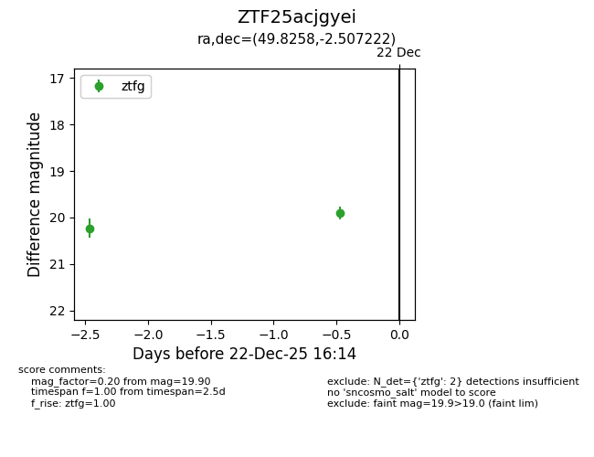
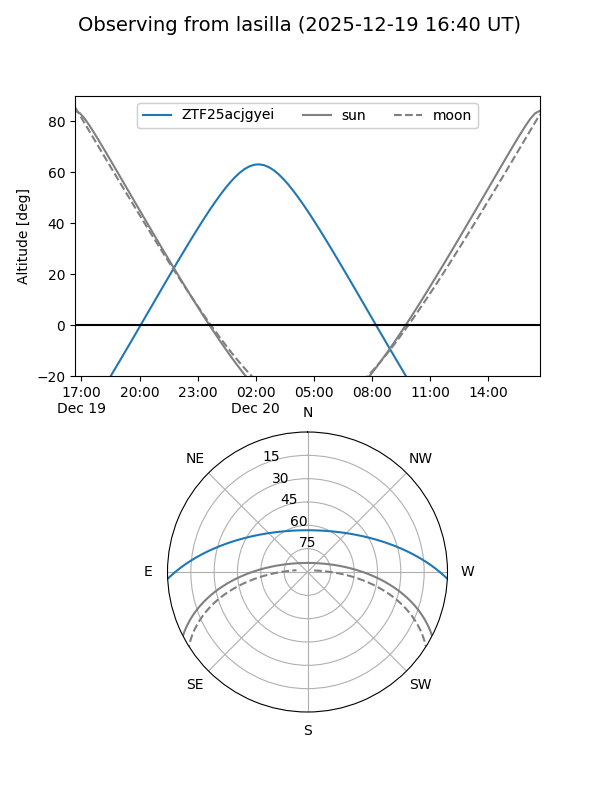
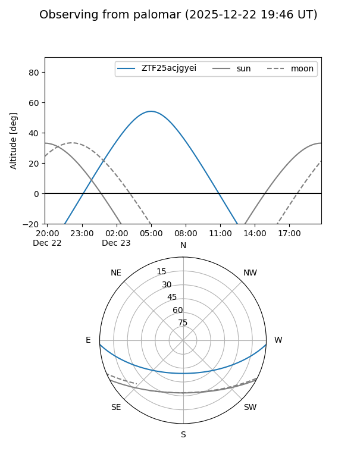

ZTF25acjgyei
Target ZTF25acjgyei at 2025-12-31 17:00
Aliases and brokers:
FINK:
Lasair:
ALeRCE:
alt names
ZTF25acjgyei (ztf,fink_ztf)
Coordinates:
equatorial (ra, dec) = 49.8258,-2.50722
equatorial (HMS+DMS) = 03:19:18.20,-02:30:26.00
galactic (l, b) = (184.5165,-46.91634)
Flags:
Photometry:
last ztfg=19.90
2 ztfg detections
Lightcurve

Visibility


Additional plots